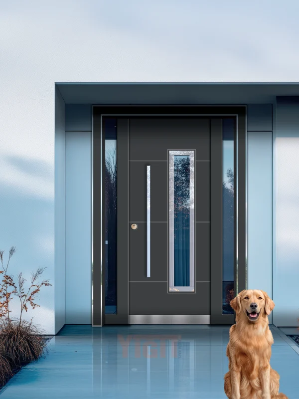

Kapılar yalnızca açılıp kapanan yapılar değildir; iki alan arasında bir bağlantı noktasıdır. Hem görsel açıdan hem de işlevsel olarak doğru kapıyı seçmek önemlidir. Tasarım, üretim ve kullanılan malzeme, kapının hem estetik hem de dayanıklılık açısından değerini belirler.
Bu yazıda, eviniz için en uygun seçeneği bulmanıza yardımcı olmak üzere beş farklı kapı malzemesinin avantajlarını ve dezavantajlarını ele alıyoruz.
1. Ahşap kapılar
Ahşap, en klasik ve popüler kapı malzemesidir. Evinize sıcaklık ve doğallık katar.
Artıları:
- Farklı ahşap türleri ve renk seçenekleri mevcuttur
- Hem modern hem de rustik dekorlarla uyum sağlar
Eksileri:
- Çürüme ve böceklenmeye karşı hassastır
- Nem nedeniyle şişme ve bükülme eğilimi gösterir
- Düzenli bakım ve cilalama gerektirir
- Görece pahalıdır
2. Çelik kapılar
Güvenlik söz konusu olduğunda çelik kapılar öne çıkar. Güçlendirilmiş çelikten üretilir ve farklı özelliklere göre çeşitlenir.
Artıları:
- Yüksek güvenlik sağlar
- Dayanıklıdır ve hırsızlığa karşı koruma sunar
- Ses ve ısı yalıtımı sağlar
- Güçlü ve prestijli bir görünüm verir
Eksileri:
- Korozyona karşı özel temizleyicilerle bakım yapılmalıdır
Yiğit Çelik Kapı
TSE belgeli çelik kapı modelleri
Güvenlik ve estetik bir arada; geniş ürün yelpazemizi inceleyin veya teklif alın.
3. Alüminyum kapılar
Modern ve endüstriyel bir görünüm için tercih edilir.
Artıları:
- Hafif, dayanıklı ve uzun ömürlüdür
- Toz boya ile farklı renklerde üretilebilir
- Nemden etkilenmez, şişme veya çatlama yapmaz
Eksileri:
- Kıyı bölgelerinde tuzlu hava nedeniyle oksidasyona uğrayabilir
4. PVC kapılar
PVC profillerden üretilen bu kapılar, iç kısımlarında galvanizli çelik desteklerle güçlendirilmiştir.
Artıları:
- Hafif, dayanıklı ve paslanmaz
- Çoklu kilit sistemleriyle güvenliği artırılabilir
- Bakımı kolaydır; nemli bezle temizlenebilir
Eksileri:
- Zamanla renk değişimi ve sararma görülebilir
- Tasarım ve renk seçenekleri sınırlıdır
5. Fiberglas (kompozit) kapılar
Yeni nesil kapı malzemelerinden biridir ve yüksek dayanıklılık sunar.
Artıları:
- Su geçirmez, gözeneksiz ve sağlamdır
- Çizilmelere ve darbelere karşı dirençlidir
- Ahşap görünümünü taklit edebilir
- Bakımı kolaydır
Eksileri:
- Piyasadaki en pahalı seçeneklerden biridir
Sonuç
Kapı seçimi, yalnızca estetik değil aynı zamanda dayanıklılık ve güvenlik açısından da önemlidir. Ahşap sıcaklık katar, çelik güvenliği artırır, alüminyum modern bir hava verir, PVC pratiklik sağlar, fiberglas ise uzun ömürlü ve güçlü bir alternatiftir.
Evinizin ihtiyaçlarına ve bulunduğunuz çevre koşullarına göre en uygun malzemeyi seçmek, uzun vadede hem konfor hem de güvenlik sağlayacaktır.
Yiğit Çelik Kapı
Çelik kapı çözümleri
2003'ten beri TSE belgeli çelik kapı üretimi. Projeniz için teklif alın.